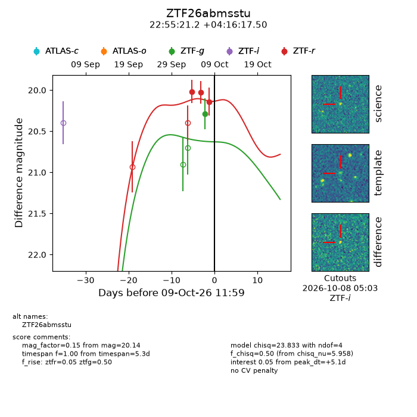
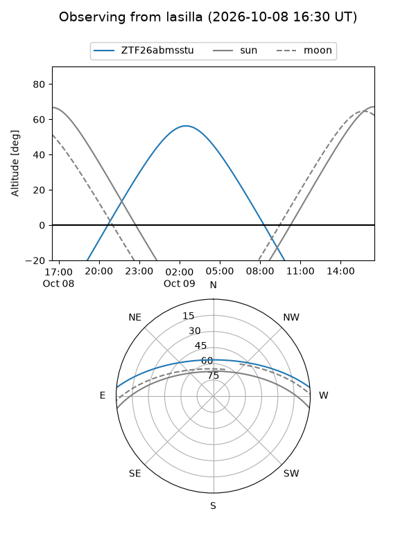
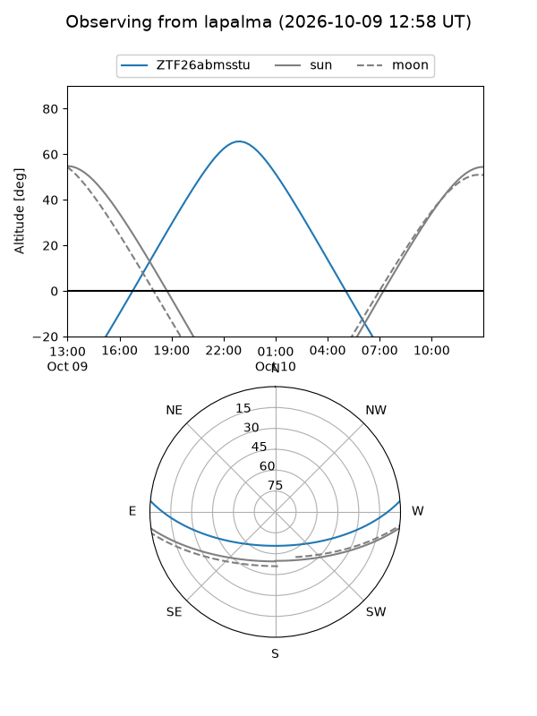
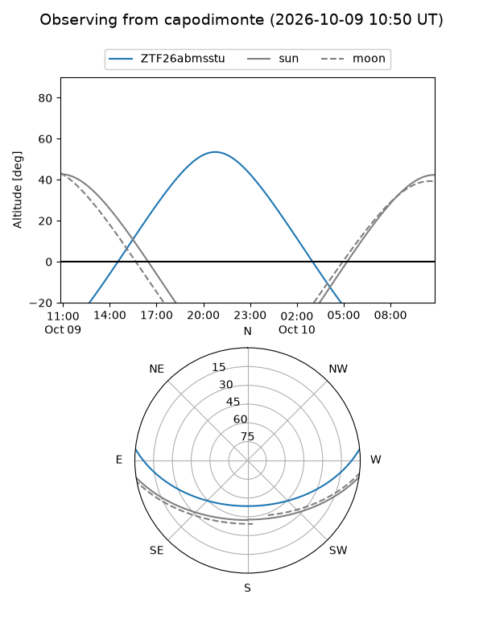
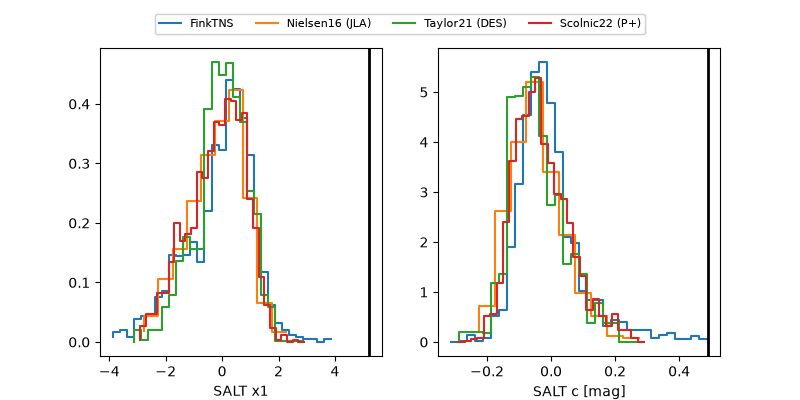

ZTF26abmsstu
Target ZTF26abmsstu at 2026-10-09 12:01
Aliases and brokers:
FINK-ZTF: ztf.fink-portal.org/ZTF26abmsstu
Lasair-ZTF: lasair-ztf.lsst.ac.uk/objects/ZTF26abmsstu
ALeRCE-ZTF: alerce.online/object/ZTF26abmsstu
Direct TNS query: direct search
alt names
ZTF26abmsstu (ztf,fink_ztf)
Coordinates:
equatorial (ra, dec) = 343.8383,+4.27153
equatorial (HMS+DMS) = 22:55:21.19,+04:16:17.50
galactic (l, b) = (76.7306,-47.91203)
Flags:
peak dt: +5.1
Photometry:
last ztfg=20.29, ztfr=20.14
1 ztfg, 3 ztfr detections
Lightcurve

Visibility



Additional plots
